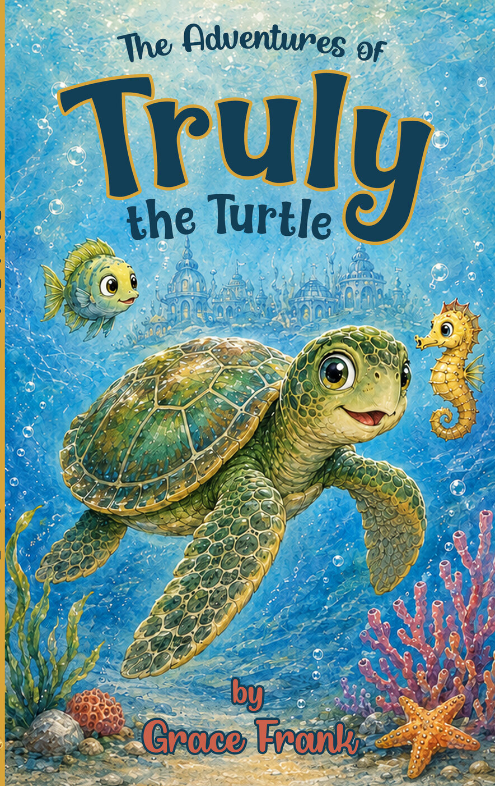
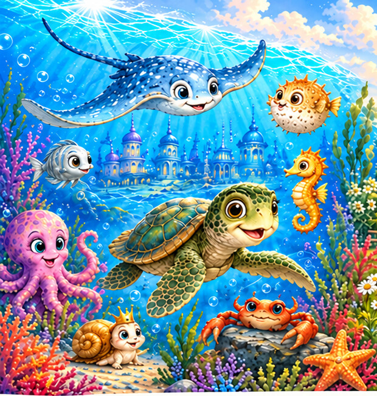
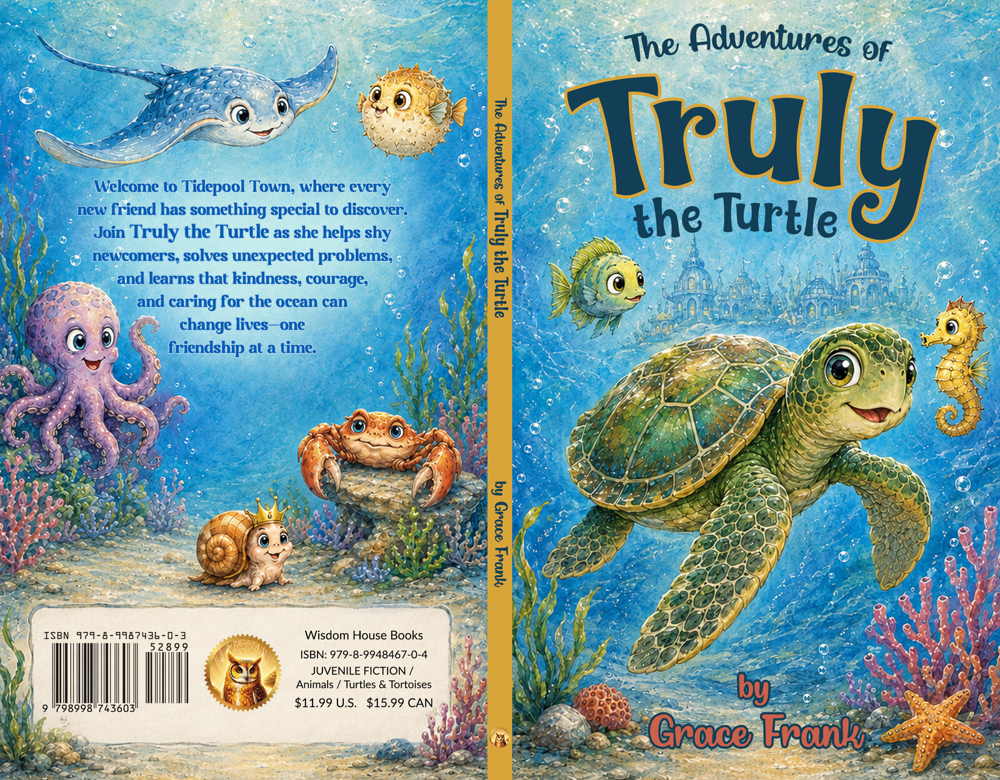
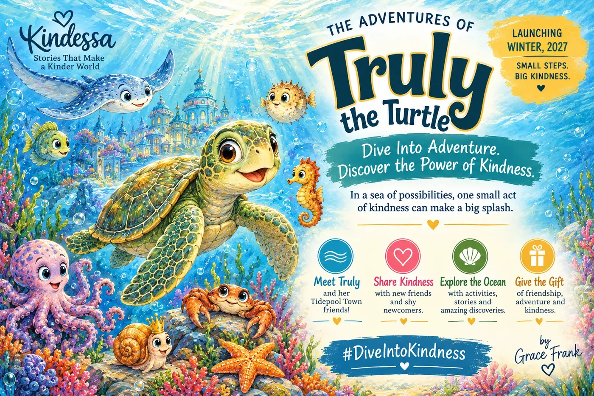
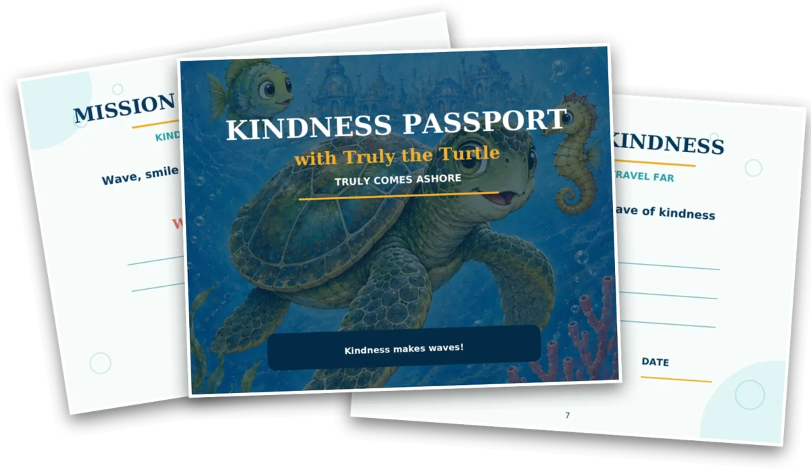

Trust & Friendship
Discovering how trust grows when friends listen, keep their word, and show up for one another.

Sometimes the greatest adventures begin when we learn to trust.
Meet Truly, a curious young sea turtle with a caring heart and an underwater town to explore. In Tidepool Town, welcoming a new friend, working through a misunderstanding, or lending a helping flipper can become an adventure.
Join Truly and her ocean friends as they discover how to trust one another, make room for differences, and care for the place they call home.
Beneath the waves lies Tidepool Town, a lively underwater village filled with coral cottages, seashell shops, seagrass fields, and friends to meet.
This is Truly’s home—and every day brings something to discover.
When Finley, a nervous new fish, arrives in town, Truly takes her time showing him around and helping him feel welcome. It is a small beginning to a friendship, but small beginnings matter here.
Across eight gentle adventures, Truly and her friends learn to listen, look beyond first impressions, forgive mistakes, and help one another through uncertain moments. Truly learns alongside her friends, discovering that everyone has something to give—and something to learn.
Trust grows one small step—and one friendship—at a time.

Friendship can be joyful, surprising, and sometimes a little complicated. Truly’s adventures give children familiar feelings to recognize and thoughtful moments to share.
Discovering how trust grows when friends listen, keep their word, and show up for one another.
Giving others time to feel comfortable and getting to know them beyond a first impression.
Noticing when someone needs help, making room for mistakes, and learning how to begin again.
Sharing discoveries, enjoying time together, and finding happiness in the everyday life of a caring community.
Getting to know the creatures who call the ocean home—and discovering small ways to help protect their world.
Written for children ages 6–8, The Adventures of Truly the Turtle invites young readers into a world of ocean friendships and meaningful discoveries.
Read together or let a growing reader explore Truly’s world independently. Each adventure offers a natural opening for conversation about feelings, choices, friendship, and caring for others.

A little turtle. A welcoming community. So much to discover together.
Sign up for book news and updates from Truly’s world.

Explore Truly’s underwater world through the companion Wisdom Bedtime Stories YouTube channel.
These gentle stories share the spirit of Truly’s adventures: friendship, kindness, discovery, and caring for the natural world. Enjoy a quiet moment together and carry a little kindness into tomorrow.
Bring the spirit of Truly’s adventures into your child’s day with the free Kindness Passport.
Four simple missions invite young explorers to welcome someone, discover something with a friend, try a brave new step, and learn how to care for animals and nature. Children can finish by making their own Wave of Kindness promise.
Share it at home, in a classroom, at the library, or with a community group—and discover where one small act of kindness can lead.
Kindness makes waves, and every wave can start with you.

Visit Willow Brook Farm, where a curious, adventurous goose and her farmyard friends discover mysteries, help one another, and find joy together.